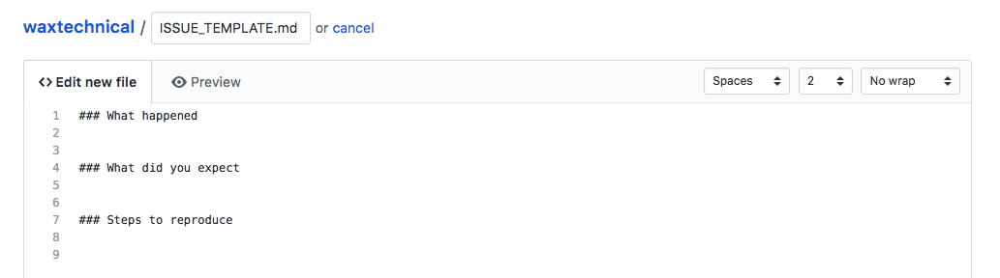

How to Create Issue Templates in GitHub
Issue templates can help users include the right information in their issue and save time for maintainers.
There are two ways to create issue templates in GitHub:
- an
ISSUE_TEMPLATE.mdfile that prescribes what should appear anytime someone selects “New Issue” - a customized link that can be placed in the README
Links are more flexible, allowing you to customize the title and add labels. Links allow you to create multiple templates per repository and, when used, override a file-based template.
Creating a file
From the main page of your repository, select “Create new file” and create a file called ISSUE_TEMPLATE.md.
Add the markdown you’d like to appear in new issues, and commit the changes.
Select the “Issues” tab then “New Issue” to test your template.
This method doesn’t allow you to customize the issue title or add labels.

Creating a link
Here’s how to create a customized link that routes to a new, prefilled issue, overriding ISSUE_TEMPLATE.md.
To create the link, you’ll add your information a URL that conforms to this structure:
https://github.com/ORG-NAME/REPO-NAME/issues/new?title=ADD-ENCODED-TITLE-HERE&body=ADD-ENCODED-BODY-HERE&labels=ADD-ENCODED-LABEL-HERE
- Copy the link above into a text editor and replace
ORG-NAMEandREPO-NAMEwith your org and repo names. - Copy and paste the title you want into a URL Encoder to translate that text into a URL. Select “Encode” and paste the result over
ADD-ENCODED-TITLE-HEREin the URL. - Do the same thing with the body of the issue, pasting it over
ADD-ENCODED-BODY-HEREin the URL. - Make sure any labels you want to apply already exist in the repo. Encode the name of the label (case sensitive!) and paste the result into
ADD-ENCODED-LABEL-HERE. See the note below about using labels. - Copy the URL into your browser to see the finished result. If everything looks good, add the link to the README in your repository, and whenever someone clicks on it they’ll have a template ready to go!
Here’s an example of a completed issue template link:
https://github.com/apaskulin/waxtechnical/issues/new?title=Add%20descriptive%20title%20here&body=%23%23%23%20What%20happened%0A%0A%0A%0A%23%23%23%20What%20did%20you%20expect%20to%20happen%0A%0A%0A%0A%23%23%23%20Steps%20to%20reproduce%0A%0A&labels=issue%20template
Labels
Labels in issue templates will only work for users with write access to your repository. Users without write access will still see the title and body of the issue template, but GitHub won’t add the labels.
To add multiple labels to an issue template, add an encoded comma (%2C) between encoded label names.
The resulting link structure is:
https://github.com/ORG-NAME/REPO-NAME/issues/new?title=ADD-ENCODED-TITLE-HERE&body=ADD-ENCODED-BODY-HERE&labels=ADD-ENCODED-LABEL-HERE%2CADD-ENCODED-LABEL-HERE
For example, for users with write access, this link adds the labels issue template and bug:
https://github.com/apaskulin/waxtechnical/issues/new?title=Add%20descriptive%20title%20here&body=%23%23%23%20What%20happened%0A%0A%0A%0A%23%23%23%20What%20did%20you%20expect%20to%20happen%0A%0A%0A%0A%23%23%23%20Steps%20to%20reproduce%0A%0A&labels=issue%20template%2Cbug
Labels in GitHub Enterprise
To add multiple labels to an issue template in GitHub Enterprise, add &labels[]= before each encoded label name.
The resulting link structure is:
https://github.com/ORG-NAME/REPO-NAME/issues/new?title=ADD-ENCODED-TITLE-HERE&body=ADD-ENCODED-BODY-HERE&labels[]=ADD-ENCODED-LABEL-HERE&labels[]=ADD-ENCODED-LABEL-HERE
Feedback
If you have any feedback or questions about this guide, please create an issue.